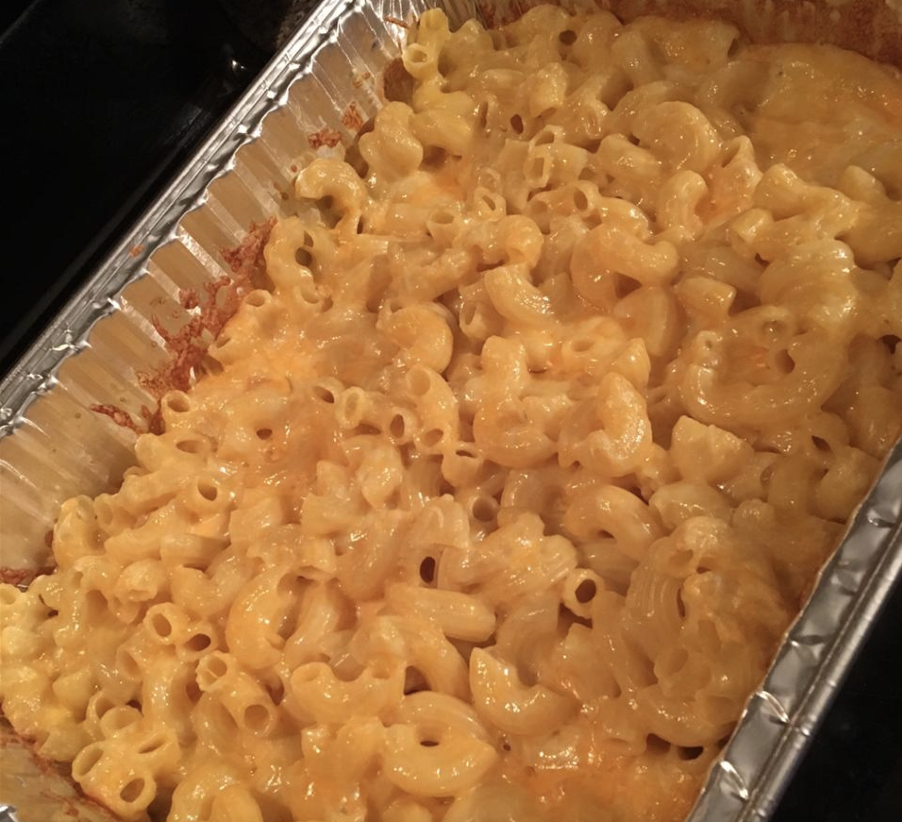

Macaroni and Cheese

Mac and Cheese straight out of the oven
This recipe was given to me by my grandmother. She was a great cook and the thing I loved most when she made was this lasagna.
It takes about 30 minutes to prepare, and then 30 minutes of oven time to finish it off and you'll have a nice, beautifully layered lasagna for everyone to enjoy!
- 1 (16 ounce) package macaroni
- 1 (10.75 ounce) can condensed Cheddar cheese soup
- 1 cup milk
- 1 pound shredded Colby cheese
- Preheat oven to 350 degrees F (175 degrees C). Bring a large pot of lightly salted water to a boil. Add pasta and cook for 8 to 10 minutes or until al dente; drain.
- Place macaroni in a 2 quart casserole dish. Stir in cheese soup and milk until well combined. Sprinkle with shredded Colby.
- Bake 25 to 30 minutes, or until cheese is brown and bubbly.